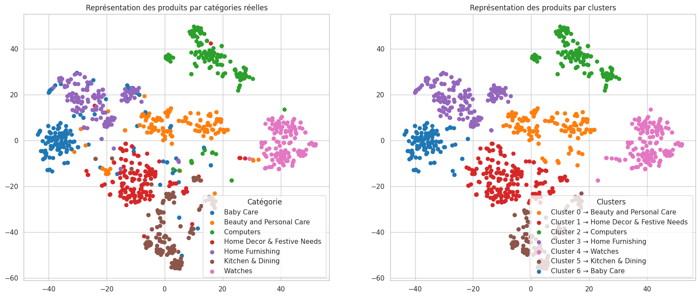
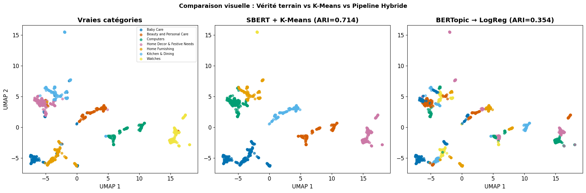
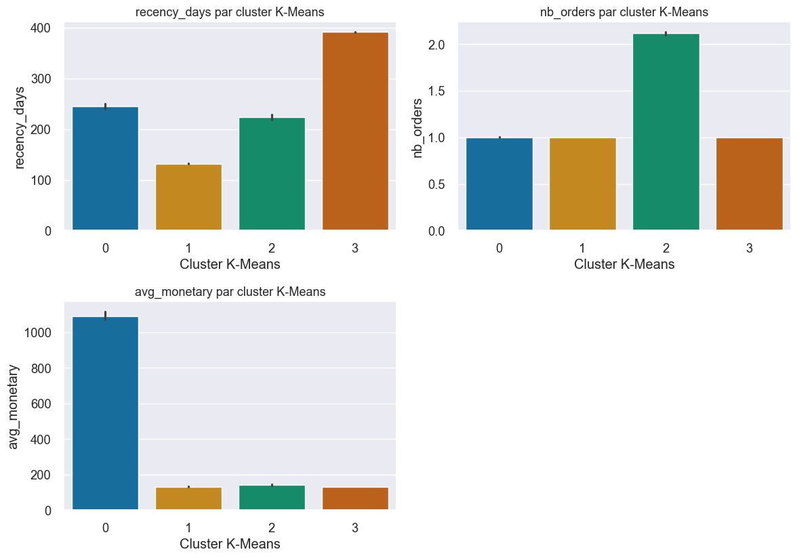

Fig. 1Coût métier (10 × FN + FP) selon le seuil de décision, LightGBM. Modèle baseline : le minimum est à 0,098. Le modèle final retenu descend à 30 173 pour un seuil de 0,096.
Scoring crédit, de la modélisation à la production
Modèle de risque de défaut entraîné avec une fonction de coût asymétrique : un faux négatif coûte dix fois un faux positif. Le seuil de décision est donc calibré sur ce coût (0,096) et non laissé à 0,5.
Le modèle est servi par une API FastAPI, exposé dans un dashboard Streamlit, versionné avec MLflow. La dérive des données est suivie avec Evidently. Six tests pytest et un pipeline CI/CD verrouillent chaque déploiement.
Classer des biens de consommation à partir du texte et de l’image
Benchmark de onze représentations textuelles, du sac de mots à Sentence-BERT, puis transfer learning image avec Xception. Sentence-BERT donne les clusters les plus fidèles aux catégories réelles.

Fig. 2Projection UMAP des embeddings Sentence-BERT. À gauche les catégories réelles, à droite les clusters obtenus : sept groupes retrouvés sur sept.Code et notebooks sur GitHub
Veille NLP
2025, projet 8
ARI, SBERT + K-Means
0,714
ARI, BERTopic
0,354
Stack
BERTopic, HDBSCAN, Streamlit, Render
Dashboard en production et veille : LDA, SBERT + K-Means, BERTopic
Comparaison de trois approches de topic modeling sur le même jeu de produits. Résultat contre-intuitif : le pipeline le plus récent, BERTopic, est deux fois moins fidèle aux catégories que SBERT + K-Means. Le rapport de veille détaille pourquoi.

Fig. 3Vérité terrain, SBERT + K-Means (ARI 0,714) et BERTopic suivi d’une régression logistique (ARI 0,354).Dashboard et rapport de veille
Segmentation clients
2024, projet 5
Commandes analysées
100 000
Stabilité suivie
26 semaines glissantes
Stack
K-Means, RFM, ARI, pandas
Segmentation clients e-commerce et contrat de maintenance
Segmentation RFM par K-Means sur les commandes Olist. La question posée n’est pas seulement « quels segments », mais « combien de temps tiennent-ils » : la stabilité est mesurée par l’ARI sur 26 semaines glissantes, ce qui donne une fréquence de ré-entraînement chiffrée.

Fig. 4Profil des quatre segments. Le cluster 2 est le seul à dépasser une commande en moyenne, le cluster 0 concentre le panier élevé, le cluster 3 les clients dormants.Code et notebooks sur GitHub
Un modèle n’a de valeur que s’il est interprétable, fiable et déployé. La performance sur un jeu de test n’est qu’une étape.
Diplômé data scientist d’OpenClassrooms après neuf projets menés de bout en bout, je travaille sur toute la chaîne : données brutes, modélisation, mise en production et suivi. Trois habitudes reviennent dans chaque projet.
Calibrer sur le coût métier. Le seuil de décision est un paramètre à optimiser, pas une constante. Sur le scoring crédit, ce choix seul fait passer le coût de 48 473 à 30 173, soit 38 % de moins.
Mesurer la stabilité, pas seulement la performance. Sur la segmentation clients, l’ARI suivi sur 26 semaines glissantes indique quand ré-entraîner, avant que le modèle ne dérive.
Livrer quelque chose qui tourne. API, dashboard, tests, CI/CD et suivi de dérive font partie du projet, pas d’une phase « plus tard ».
Outils
Machine learning
scikit-learn
LightGBM, XGBoost
K-Means, HDBSCAN
PCA, UMAP
SHAP
NLP et vision
Sentence-BERT
BERTopic
spaCy, NLTK
TensorFlow, PyTorch
Transfer learning
Mise en production
FastAPI, Streamlit
MLflow, Evidently
pytest
GitHub Actions
Docker
Big data et cloud
PySpark, Spark MLlib
AWS EMR, S3
Parquet
pandas, numpy
SQL
Contact
Ouvert aux opportunités en 2026, en CDI ou en mission. Un message sur LinkedIn suffit.